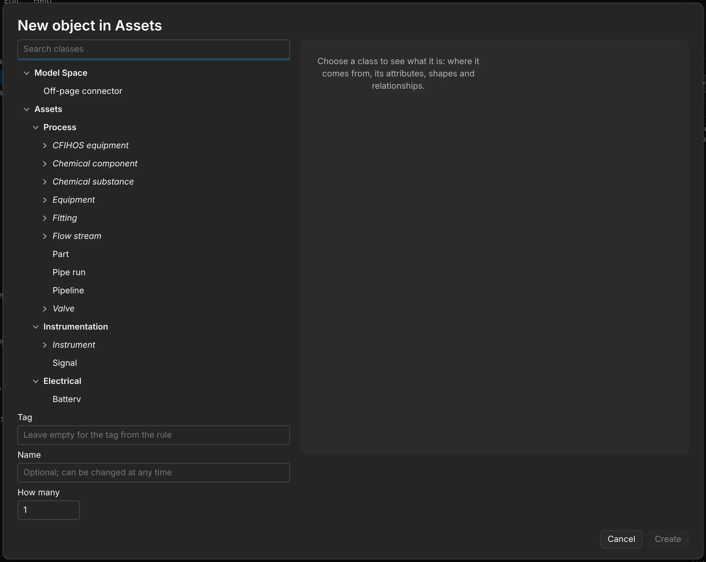
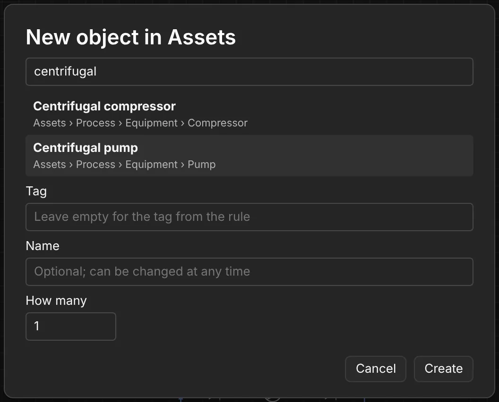
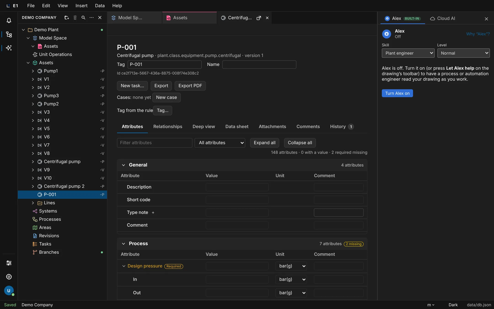
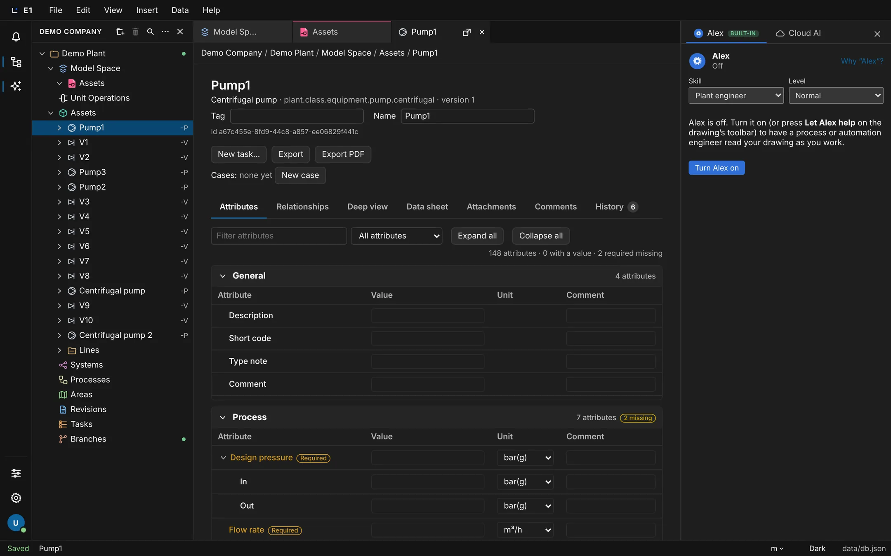
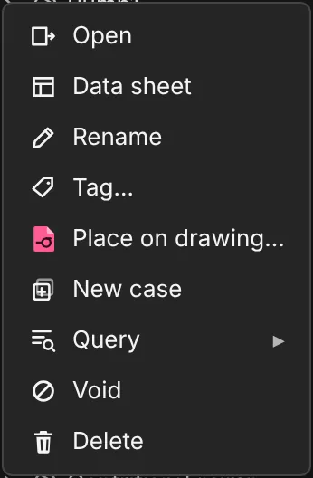
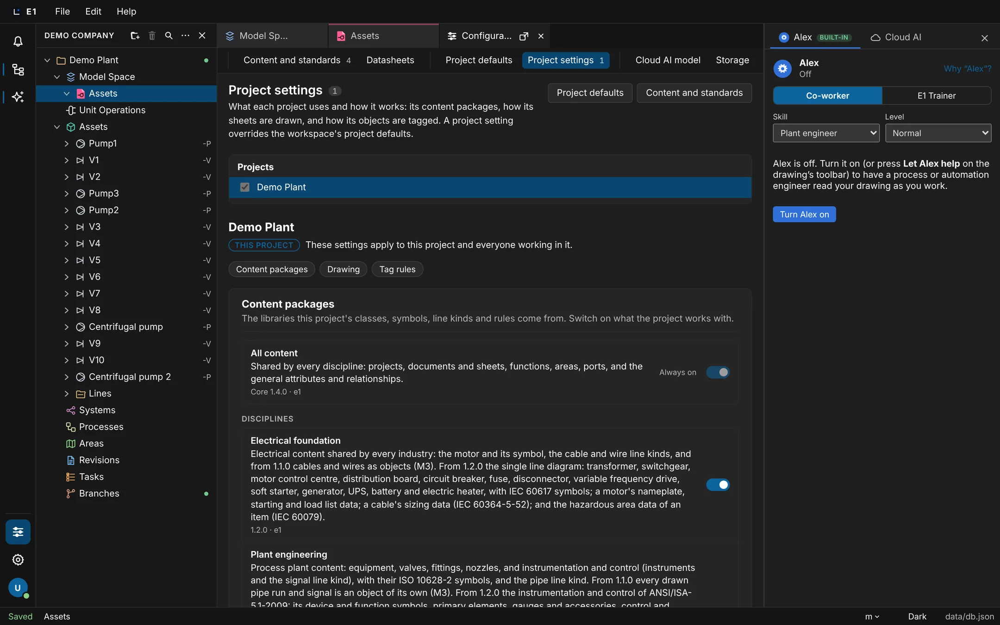
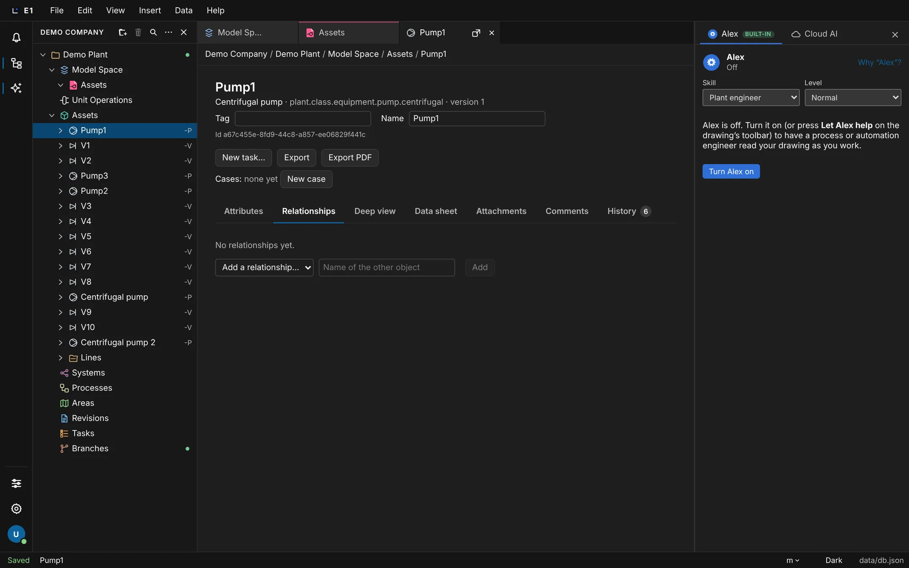
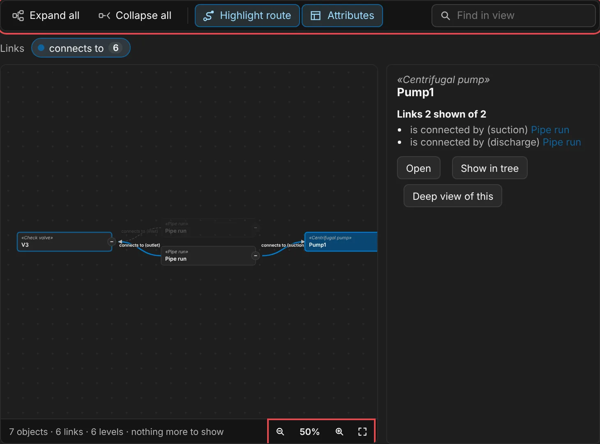

Academy / User guide / Objects, attributes and tags
4. Objects, attributes and tags
Make equipment and other objects from library classes, fill in attributes with units, relate objects, and tag them with your project's rules.
About this guide
In E1 everything in the plant is an object: a pump, a valve, a function, an area, a pipe run. Each object is made from a class of the library, carries attributes with units, can be related to other objects, and gets its tag from your project's rules. Drawings, lists and datasheets all show the same objects.
The typical workflow
- Create an object from a section of the explorer, or several at once.
- Open it in the object window and fill in its attributes, with sub-attributes and attributes of your own.
- Read and adjust its tag: automatic tags, a manual tag with Tag…, Retag… with preview, and the project's tag rules.
- Relate it to other objects, for example a function that is implemented by a pump.
- Rename, add cases, move, void or delete it.
- See what is coming: Deep view, units of measurement and calculations on attributes.
Before you start
You have a project with its sections (Create a project, The sections of a project). The classes and attributes you can choose come from the library in Configuration (Configuration). The examples use the demo project with pumps Pump1 to Pump3 and valves V1 to V10; on a project of your own, use your own names.
Create an object
Right-click a section and choose its New … item: a window shows the tree of classes that may live there and, on the right, what the chosen class is. You pick one, and E1 makes the object, tags it from the project's rules and opens it.
- Where
- Right-click a section or a folder in it → New asset… (Assets), New unit operation…, New system…, New process…, New area…, New document… (Documents) or New task… (Tasks); the same buttons are on the section's page
- Who
- A license and a project role that may edit objects
- Before you start
- A project is expanded in the explorer.
Steps
| # | Action | Expected result |
|---|---|---|
| 1 | Right-click Assets → New asset…. | The window New object in Assets opens with a box Search classes and a tree of classes on the left, and on the right "Choose a class to see what it is". If you have made objects before, a row Recent with class buttons is above the tree. |
| 2 | Type centrifugal in Search classes. | The tree shrinks to the classes whose name, key, CFIHOS code or synonyms match, with the classes above them, all open; the typed text is marked and "1 class matches" (or how many) shows above the tree. It stays a tree. If nothing matches: "No class matches." Enter chooses the first match. |
| 3 | Click Centrifugal pump. | The class is highlighted and "Creating Centrifugal pump" shows under the tree. On the right, the class is described: its place in the tree, name, package, standard and CFIHOS code, its description, and a row Source, Attributes, Shapes, Relationships, Contains with counts; click one to jump to it. Below: Where it comes from (package, standard, CFIHOS class, synonyms, tag number format, parent classes, key), the attributes in their groups with type, Required and default ("More attributes of your own can be added to the object after it is created."), the shapes that draw it with the Default one marked, its relationship types with their limits, and what it may own and its subclasses. If the class has published catalog items, a drop-down From catalog appears, starting with "No catalog item". A double-click on a class chooses it and creates the object at once. |
| 4 | Leave Tag ("Leave empty for the tag from the rule") and Name ("Optional; can be changed at any time") empty. | No change yet. |
| 5 | Click Create (or press Enter in Tag or Name). | The window closes. The new pump opens in its object window with its tag, for example P-001, as the heading. It appears under Assets in the explorer. |
| 6 | Right-click Systems → New system… and search centrifugal pump. | The window New object in Systems offers "Centrifugal pump tag", not the pump itself: a section only offers the classes that may live in it. |
| 7 | Click Cancel (or click outside the window). | The window closes and nothing is created. Esc does not close it. |
| 8 | Open New asset… again and double-click Centrifugal pump under Recent. | The pump is created at once, with the tag from the rule, and opens. A double-click on a class in the tree, also while searching, creates it at once in the same way; in the flat list below the tree (Other classes), a double-click only chooses the class, so click Create after it. |

Where no class may be created, the window says "No class can be created here." Under Unit Operations a search for "pump" offers "Pumping". Making an object from a catalog item is described in Catalogs. Symbols placed on a drawing also make objects: see Place a symbol.
Make several objects at once
The How many field of the New object window makes up to 100 objects of one class in one go, numbered after the tag or name you type.
- Where
- The New object window (for example right-click Assets → New asset…) → How many
- Who
- A license and a project role that may edit objects
- Before you start
- A project with an Assets section.
Steps
| # | Action | Expected result |
|---|---|---|
| 1 | Right-click Assets → New asset…, search gate valve and click Gate valve. | The class is chosen. |
| 2 | Type XV-200 in Tag and 3 in How many. | A Numbering box appears with Start at (1), Digits (2) and Separator (Dash (-)). The preview reads "Tags: XV-200-01, XV-200-02, XV-200-03". The button reads Create 3. |
| 3 | Set Start at to 5. | The preview reads "Tags: XV-200-05, XV-200-06, XV-200-07". |
| 4 | Click Create 3. | "Making 1 of 3…" and so on shows while it works. XV-200-05, XV-200-06 and XV-200-07 appear under Assets. |
| 5 | Open the window again, choose a class, leave Tag and Name empty and type 3 in How many. | The preview reads "3 objects, each with the next tag from the rule. Type a tag or a name to number it." |

A name typed instead of a tag is numbered the same way ("Names: …"). The separator can also be Underscore (_), Dot (.), Space or None. If E1 refuses one of the objects part-way (for example a tag that already exists), the rest are not made and the window says "k of n made; then: reason".
The object window and its tabs
Every object opens in a window of its own, as a tab: a header with its class, tag, name and actions, and seven tabs for its attributes, relationships, deep view, datasheet, chat, history and files.
- Where
- Double-click an object in the explorer; right-click it → Open; right-click its symbol on a 2D space → Object properties; it also opens by itself after Create
- Who
- Anyone who can open the project; editing needs a role that may edit objects
- Before you start
- The project has an object, for example Pump1.
The header
- The heading (tag, or the name when there is no tag), then the class name, "· class key · version N".
- The fields Tag (for tagged classes) and Name. Enter or leaving the field saves; Esc brings back the old text.
- "Id …", a fixed identifier that never changes.
- The buttons New task…, Export (the attributes as an Excel file) and Export PDF.
- "Cases: none yet" with New case (see Cases).
- The tag state, for example "Tag from the rule", with a Tag… button (see Tag…).
- For an object made from a catalog item: "From catalog: …" with Re-apply… and Detach.
Steps
| # | Action | Expected result |
|---|---|---|
| 1 | Double-click Pump1 in the explorer. | A tab "Pump1" opens with the heading "Pump1" and the tabs Attributes, Relationships, Deep view, Data sheet, Chat, History, Attachments, in this order. Because Centrifugal pump has a datasheet design, the Data sheet tab is shown ("Datasheet of Pump1"); for a class without one, Attributes is shown. |
| 2 | Click Attributes, then press the → key. | Relationships is selected. ←, Home and End also move between tabs: Home goes to Attributes, End to Attachments, the last tab. |
| 3 | Click Attachments, then double-click Pump2 in the explorer. | Pump2 opens on Attachments too: the window opens on the tab you chose last. |
| 4 | Click in Name, type a new name and press Esc. | The old name is back; nothing is saved. |
| 5 | Click Export. | An Excel file with the object's attributes is downloaded. |

The tabs are described in their own guides: Attributes, Relationships, Deep view, Data sheet, Chat and History. On Attachments you add files with Add files… or by dropping them on the tab; each file has Open and Remove, and a PDF is previewed in the tab.
Fill in attributes: values, units, pick lists and required values
The Attributes tab lists everything the object's class says about it, grouped in sections. You type numbers with their unit, choose from pick lists, and see at once which required values are still missing.
- Where
- Object window → Attributes
- Who
- A license and a project role that may edit objects
- Before you start
- A new Centrifugal pump (see Create an object).
What is on the tab
- A box Filter attributes (Esc clears it; with no match: "No attribute matches."), a drop-down with All attributes, With a value, Without a value and Required, missing, and the buttons Expand all and Collapse all.
- A count such as "148 attributes · 0 with a value · 2 required missing".
- One collapsible section per group of the class (for example General, Process), each with its count and "N missing", then a section Attributes of this object. The first section is open; others with more than 12 attributes start collapsed.
- The columns Attribute, Value, Unit and Comment.
How values are entered
| Kind of value | Control |
|---|---|
| Yes / no | A drop-down with Yes and No |
| Choice, or a closed pick list | A drop-down |
| Open pick list | A text field that suggests the list's values |
| Date | A date field |
| Number or quantity | A text field; a quantity has a Unit drop-down beside it |
| Data series | "N rows · columns" with a chart and editable rows |
Steps
| # | Action | Expected result |
|---|---|---|
| 1 | Open the new pump on Attributes. | Design pressure and Flow rate are marked Required and highlighted as missing; the Process section shows "2 missing". |
| 2 | Choose Required, missing in the drop-down. | Only the rows with a missing required value are listed. |
| 3 | Set the drop-down back to All attributes. On the Flow rate row type 40 in Value and press Enter. | The Required mark disappears; the value takes the unit its drop-down shows (the project's unit, else the attribute's own, m³/h). The count of missing values goes down by one. |
| 4 | On Design pressure choose bar(g) in its Unit drop-down, then type 10 and press Enter. | The value is 10 bar(g); after a reload it still shows 10 bar(g). Changing the unit later asks Convert or Change unit only (see Units of measurement). |
| 5 | Type pressure in Filter attributes. | Only rows whose name contains "pressure" remain. Esc clears the filter. |
| 6 | Click Collapse all, then Expand all. | All sections close, then all open. |

The units offered are those of the attribute's unit group in the owner's unit table, the project's unit first (pressure, for example, has 32 units, each gauge one also as (g)). A value that is no longer in its pick list stays shown as "value (not in the list)". When the class has a newer version that no longer takes some values, they are listed under "Retired values (…)" with a Discard button each.
Type only the number: a unit typed in the value field is refused. The unit is always chosen in the Unit drop-down; see Units of measurement.
Sub-attributes
An attribute can have sub-attributes, for example Design pressure with In and Out. The class's sub-attributes are indented under their parent row. You can also add a value of your own to one object; it is listed under Attributes of this object as "Parent / name".
- Where
- Object window → Attributes → a row with a chevron or a +
- Who
- A license and a project role that may edit objects
- Before you start
- A Centrifugal pump is open on Attributes.
Steps
| # | Action | Expected result |
|---|---|---|
| 1 | Look at the Design pressure row. | It has a chevron Collapse Design pressure and the indented rows In and Out, each with its own value and unit. |
| 2 | Click the chevron. | The sub-rows are hidden; the chevron now reads Expand Design pressure. |
| 3 | Expand it again and type a value under In, then press Enter. | The value is saved on the sub-row. |
| 4 | On a row that shows + (for example Type note), click + (Add sub-attribute to Type note). | E1 asks "Name of the new sub-attribute of Type note". |
| 5 | Type a name, for example Source, and confirm. | A value of this object only is saved under the key "Type note / Source". It is shown in the section Attributes of this object as "Type note / Source", not indented under Type note. |

Add an attribute to one object
When one object needs something its class does not have, add a library attribute or a free text attribute to that object only. It appears in the section Attributes of this object.
- Where
- Object window → Attributes → foot of Attributes of this object → Add attribute…
- Who
- The permission to add attributes to objects
- Before you start
- An object is open on Attributes.
Steps
| # | Action | Expected result |
|---|---|---|
| 1 | Scroll to the section Attributes of this object. | With nothing added yet it says "This object has no attributes beyond its class." Below is the drop-down Add attribute…. |
| 2 | Open Add attribute…. | Library attributes the class does not have, each as "name · kind", and at the end Free text attribute…. |
| 3 | Pick a library attribute. | A new row with it appears under Attributes of this object. |
| 4 | Open Add attribute… again → Free text attribute…, type a name and confirm. | E1 asked "Name of the new attribute"; a text row with that name appears. |
Without the permission, the drop-down is replaced by "Adding an attribute to one object needs the permission to add attributes to objects." To add an attribute to every object of a class, change the class in the company library (Company library).
Automatic tags and reference designations
A new object gets its tag from the project's tag rules at once, for example P-001, P-002 for pumps, and its reference designation (such as -P) shows in the explorer. When an input of the rule changes, the tag is marked out of date instead of changing behind your back.
- Where
- The heading and tag state of the object window; the explorer row
- Who
- A license and a project role that may edit objects
- Before you start
- A project with the default tag rules.
Steps
| # | Action | Expected result |
|---|---|---|
| 1 | Create a Centrifugal pump under Assets with Tag and Name empty. | It is tagged P-001 (or the next free number). The header shows "Tag from the rule". In the explorer the designation "-P" shows at the end of its row. |
| 2 | Create a second pump the same way. | It is tagged with the next number, for example P-002. |
| 3 | On the first pump's Attributes tab, change Short code (for example to PA) and press Enter. | The tag stays as it was; the header shows "Tag out of date: an input changed" and the explorer row is marked "Tag out of date: an input of its tag rule changed". |
The tag states are "Tag from the rule", "Tag pending: an input is missing", "Tag out of date: an input changed" and "Manual tag". Whether a changed input only marks the tag or retags at once is an option of the tag rules (default: mark it out of date). Bring out-of-date tags up to date with Retag…. An ISA pressure gauge placed on a drawing is tagged PG-001.
Set a manual tag with Tag…
The Tag… dialog shows where an object's tag comes from and what the rule would give, and lets you set a tag of your own or go back to the rule's tag.
- Where
- Right-click an object in the explorer → Tag…; the Tag… button in the object window; the Tag tool of the drawing toolbar (then click a symbol)
- Who
- A license and a project role that may edit objects
- Before you start
- Two pumps tagged P-001 and P-002 (see Automatic tags).
Steps
| # | Action | Expected result |
|---|---|---|
| 1 | Right-click P-001 → Tag…. | A dialog "Tag of P-001" with State "From the rule", Designation, The rule gives and a field Manual tag. Set tag is disabled while the field is empty or unchanged. |
| 2 | Type P-002 and click Set tag. | Refused with the message "P-002 is already the tag of …". The tag is unchanged. |
| 3 | Type P-500 and click Set tag. | The dialog closes. The pump is P-500 in the explorer and the window header shows "Manual tag". |
| 4 | Open Tag… again. | State "Manual". Because the rule now gives another tag, the button Use the rule's tag is shown; clicking it gives the pump the rule's tag again. |
| 5 | On a 2D space, select one pump symbol and click Tag in the drawing toolbar. | The Tag dialog of that pump opens. With nothing selected the hint reads "Click the symbol to tag." and the next symbol you click opens. |

Cancel closes the dialog without a change. Other states you may see: "Pending: an input is missing", "Out of date: an input changed" and "Named" (an object without a tag).
Retag… with preview
Retag… gives objects the tags their rules give now. It shows every old and new tag first, and changes nothing until you click Retag.
- Where
- Explorer header → More explorer actions (…) → Retag… (for the selected project, or the first one)
- Who
- A license and a project role that may edit objects
- Before you start
- A pump whose tag is out of date (change its Short code, see Automatic tags).
Steps
| # | Action | Expected result |
|---|---|---|
| 1 | Select the project, click More explorer actions → Retag…. | A dialog "Retag" with Scope "All objects", a check box Include manual tags, and the line "n of m change; k keep their tag." |
| 2 | Read the table "Retag preview". | The columns Now, New and Class; the out-of-date pump is listed with its old and new tag. Nothing has changed in the explorer yet. |
| 3 | Set Scope to "One class" and type Pump in Class. | The preview only lists pumps. |
| 4 | Click Retag. | The dialog closes and the tags in the explorer change as previewed. |
Retag stays disabled while nothing would change or while two objects would get the same tag; collisions are listed in red ("Collisions: …") and highlighted in the table. Manual tags are kept unless Include manual tags is ticked ("Manual tags left as they are: …"). A tag that is still pending is marked "(pending)". Cancel changes nothing.
Set up tag rules for a project
The tag configurator sets how a project's objects are tagged: rules per class built from segments (text, attributes, the owner, a running number), lookup tables and options. You see a sample tag as you build, test the rules against the project, and save.
- Where
- Select one project, then File → Project settings… → Tag rules; or left rail Configuration → Project settings → Tag rules
- Who
- A project role that may change the project's settings
- Before you start
- A project with a few objects. Select only one project: with several selected the section says "Tag rules are set one project at a time. Select a single project to edit them."
Steps
| # | Action | Expected result |
|---|---|---|
| 1 | Select the project and choose File → Project settings…, then go to Tag rules. | The text "New objects get their tags from these rules at once; existing objects change only when retagged." and a list Rules with the default rule. |
| 2 | Click Add rule. | A rule "New rule" is added and selected, with three segments (an attribute, the text "-", a running number). |
| 3 | Type Pumps in Name and plant.class.equipment.pump in Applies to (class keys, comma separated; empty for the default rule). | The rule shows its name in the list. |
| 4 | Set Segment 1 source to text and type PU in its text field. | The sample tag changes to start with PU. |
| 5 | Set the start of segment 3 (the running number) to 101. | The Sample tag reads PU-101. |
| 6 | Click Test against project. | "n of m objects would get another tag." and a table with the columns Now, With these rules and Class. Nothing has changed yet. |
| 7 | Click Save rules. | "Saved. New objects use these rules; retag to change existing tags." |
| 8 | Create a Centrifugal pump under Assets. | Its heading is PU-101. Existing pumps keep their tags until you use Retag…. |

Options
| Option | Choices |
|---|---|
| When an input changes | Mark the tag out of date, Retag at once |
| Numbers of deleted objects | Never reused, Reused (lowest free) |
| Comparing tags | Ignore case, Exact |
| A tag is unique in | The project, Its class family, Its rule |
| A manual tag off the pattern | Is fine, Is reported, Is refused |
| Retag after a revision is issued | Allowed, Warned, Blocked |
| Short codes | Conventional letters (P, V, TK), IEC 81346-2 letter codes (GPB, QM, CM) |
The rule list has Move up, Move down, Remove rule and Start from template (the library's rules). Each segment has ↑, ↓ and ×; Add segment adds one. A segment's source can be text, an attribute, the owner, a related object, the project or a sequence. Lookup tables take one "text = replacement" per line; Add table makes a new one. The sample can be shown for another class with the class picker next to "Sample:".
Planned (roadmap 12.5, M6 Rules): the tag configurator will run on the same rule engine as calculations and lists, so that rules can be used everywhere and tags follow them.
Relate objects
Relationships connect objects across sections, for example a function under Systems that "is implemented by" a pump under Assets. You pick the other object in a tree that shows only what fits the relationship, or you drag one object onto the other in the explorer with the right mouse button. A relationship shows from both sides, and removing it leaves both objects in place.
- Where
- Object window → Relationships; or the explorer, dragging with the right mouse button
- Who
- A license and a project role that may edit objects
- Before you start
- A pump such as Pump1 under Assets.
Steps
| # | Action | Expected result |
|---|---|---|
| 1 | Right-click Systems → New system… and click Function in the class tree. | Its description ("What something does…") shows under the tree. |
| 2 | Type TIC-101 in Tag and click Create. | TIC-101 opens in its object window. |
| 3 | Click the Relationships tab. | "No relationships yet." with a drop-down Add a relationship… and Add. The drop-down lists only the types a function takes part in. |
| 4 | Choose is implemented by. | A tree opens under it with a line that says how many objects fit "is implemented by", a box Filter by tag or name and the sections and folders that hold equipment, valves, instruments, motors or parts. Functions, areas and everything else are not in it, and neither is what is in a bin. |
| 5 | Click Pump1 in the tree, then Add. | A group "is implemented by" with the count 1, holding a link Pump1 and a Remove button. A double-click on Pump1 in the tree adds it at once, without Add. |
| 6 | In the explorer, expand TIC-101 under Systems. | Pump1 shows under it as a reference row with a link mark. Pump1 is still under Assets. |
| 7 | Click the link Pump1 on the tab, then open its Relationships tab. | Pump1 opens; the relationship shows from its side, with the inverse name and TIC-101. |
| 8 | Right-click the reference row under TIC-101 → Remove reference. | The browser asks "Remove the relationship to Pump1? Both objects stay." |
| 9 | Click OK. | The reference row is gone, Pump1 is still under Assets, and TIC-101 shows "No relationships yet." |
Relate in the explorer: drag with the right mouse button
| # | Action | Expected result |
|---|---|---|
| 1 | In the explorer, press and hold the right mouse button on Pump1 under Assets and move the mouse. | Pump1 fades: it is being dragged to relate it, not to move it. |
| 2 | Move it over TIC-101 under Systems. | TIC-101 is outlined. A row that cannot be related (a section, a folder, a 2D space, what is in a bin) is not outlined. |
| 3 | Release the right mouse button. | The window Make a relationship? says "Pump1 implements TIC-101." and "Both objects stay where they are." When several types fit, it lists them to choose from. When none fits, it says No relationship fits and why. |
| 4 | Click Make relationship. | The window closes. Pump1 shows under TIC-101 as a reference row, and Pump1 is still under Assets. |

A right-click without dragging still opens the row's menu, and Esc during the drag cancels it. A drag with the left mouse button moves an object, as before (see Move an object); only the right button relates. Both objects must be in the same project. Instead of step 8 you can click Remove on the tab. A reference row's right-click menu has Open and Remove reference; selecting it and pressing Delete asks the same question. A case shows its object's relationships read-only: "A case has its object's relationships; change them on the object." Framing symbols on a drawing also relates them to a system or area (see the drawing guide), and functions can generate a loop diagram.
Rename an object
Change an object's name in the explorer or in its window. The name is separate from the tag: an object can have both, and the explorer shows the tag when there is one.
- Where
- Right-click the object → Rename, or select it and press F2; or the Name field in the object window
- Who
- A license and a project role that may edit objects
- Before you start
- An object such as Pump1.
Steps
| # | Action | Expected result |
|---|---|---|
| 1 | Right-click Pump1 → Rename. | The row turns into a text box. |
| 2 | Type Feed pump and press Enter. | The row shows "Feed pump", and so does its object window when you open it. |
| 3 | Open the object and look at History. | The rename is listed with the name before and after. |
Cases of an object
A case is a variant of an object, for example another operating condition of a pump. It takes over the object's values until you type its own, so you only enter what differs.
- Where
- Right-click the object → New case; or the New case button in the object window
- Who
- A license and a project role that may edit objects
- Before you start
- An object with some attribute values.
Steps
| # | Action | Expected result |
|---|---|---|
| 1 | Right-click Pump1 → New case. | A row "Case 1" appears under Pump1 in the explorer. |
| 2 | Open "Case 1". | Its header says "Case of Pump1". On Attributes the values read "Inherited". |
| 3 | Type a new value on one attribute and press Enter. | That row now reads "Own value" and has a ↺ button. |
| 4 | Click ↺. | The row goes back to the object's value and reads "Inherited" again. |
The object's own window lists its cases on the line "Cases:" ("none yet" when there are none). A case's relationships are those of its object and cannot be changed on the case.
Move an object
Drag an object to another folder or section. E1 only offers a drop where its class may live, and checks it again when you drop.
- Where
- Explorer, by drag and drop
- Who
- A license and a project role that may edit objects
- Before you start
- A folder under Assets (right-click Assets → New folder).
Steps
| # | Action | Expected result |
|---|---|---|
| 1 | Drag Pump1 onto the folder under Assets. | The folder is offered as a drop target. |
| 2 | Drop it. | Pump1 is now inside the folder. Its drawings and relationships are unchanged. |
| 3 | Drag Pump1 onto a folder under Model Space. | The drop is refused; nothing changes. If the server refuses a move, an alert gives the reason. |
Dropping an object on an open drawing places it on that 2D space instead of moving it.
Void an object
Voiding takes an object out of use without deleting it, so that its record is kept. Voided objects go to the project's Voided bin, where the only action is Unvoid.
- Where
- Right-click an object (or a 2D space or folder) → Void
- Who
- A license and a project role that may edit objects
- Before you start
- An object you can void, for example a valve.
Steps
| # | Action | Expected result |
|---|---|---|
| 1 | Right-click V2 → Void. | V2 is gone from Assets. A Bin row appears in the project. |
| 2 | Expand Bin → Voided bin → Assets and right-click V2. | Only Unvoid is offered. Nothing voided can be deleted. |
| 3 | Choose Unvoid. | V2 is back under Assets. |
Delete an object, restore it, or delete it permanently
Delete moves an object to the project's Deleted bin at once, from where Restore brings it back and draws it again where it was. Delete permanently… in the bin first shows everything that goes with it.
- Where
- Right-click the object → Delete, or select it and press Delete; in the bin, right-click → Restore or Delete permanently…
- Who
- A license and a project role that may delete objects
- Before you start
- An object you may delete, for example the check valve V3.
Steps
| # | Action | Expected result |
|---|---|---|
| 1 | Right-click V3 → Delete. | No question is asked. V3 is gone from Assets and shows under Bin → Deleted bin → Assets, styled as binned. The Bin row stays collapsed. |
| 2 | Right-click V3 in the bin → Restore. | V3 is back under Assets, and on its 2D spaces where it was drawn. |
| 3 | Delete V3 again, then right-click it in the bin → Delete permanently…. | A dialog "Delete V3 permanently?" with "It leaves the deleted bin and cannot be restored.", the class (Check valve), "Objects that go with it", "Relationships" and "Placements on 2D spaces" ("On 2D space; the lines through it heal", or "It is on no 2D space."). |
| 4 | Click Delete permanently. | V3 is gone for good. The Bin row disappears when it is empty. |
Review check C7 says "Delete an object: the preview lists what goes with it." The preview is not shown on the first Delete; it appears at Delete permanently… in the Deleted bin. To undo a delete, use Restore, or Undo this change on the History tab.
On a drawing, deleting a selected symbol asks whether to remove only the placement or to delete the object; a deleted object lands in the same bin.
Deep view
Deep view will be a graphical view of one object and what it is connected to. The tab and the menu item are there today, but they only show a placeholder.
- Where
- Object window → Deep view; right-click a symbol on a 2D space → Deep view
- Who
- Everyone
Steps
| # | Action | Expected result |
|---|---|---|
| 1 | Open Pump1 and click the Deep view tab. | The heading "Deep view" and the text "A graphical view of Pump1 will be shown here. It is being designed." |
| 2 | On a 2D space, right-click the pump's symbol → Deep view. | The object window opens on the same placeholder tab. |

Being designed (listed under Controls that do not work yet in Help → Under construction, milestone M4). What it will show is not decided yet.
Units of measurement
Every quantity has its value and its unit. You type only the number; the unit is chosen from the drop-down beside it, with the project's unit first. A value keeps the unit it was given. When you change the unit of a value, E1 asks whether to convert the number or only change the unit.
- Where
- An object's Attributes tab: the Unit drop-down beside each quantity; a quantity cell in a list (double-click or F2)
- Who
- Anyone who may edit the object's values
- Before you start
- The project's unit system is set in Project settings → Units (if none is chosen, each attribute offers its own unit first).
Steps
| # | Action | Expected result |
|---|---|---|
| 1 | Open a pump with no flow rate yet, in a project set to Imperial. | The Flow rate unit drop-down shows ft³/h, the Imperial unit, first. |
| 2 | Choose m³/h in the drop-down, type 60 in the value and press Enter. | The value is 60 m³/h. The unit you choose before typing the number is kept. |
| 3 | Type 40 m³/h in the value instead. | Refused under the field: "Type only the number; choose the unit beside it." Nothing is saved. |
| 4 | Choose L/min in the drop-down of the 60 m³/h value. | E1 asks "Change the unit of Flow rate from m³/h to L/min?" and says what each answer gives: "Convert: 60 m³/h becomes 1000 L/min. Change unit only: 60 L/min." |
| 5 | Click Change unit only. | The value is 60 L/min: the number is not converted. Use this to correct a wrong unit. |
| 6 | Choose m³/h again and click Convert. | The value is 3.6 m³/h: the same quantity in the new unit. Cancel (or Esc) would have kept the value as it was. |
A list cell works the same way: the number in the cell, the unit drop-down beside it, and the same question when you change the unit of a number already there. Values in different units are compared, checked, filtered and summed correctly; a list column or a total in a fixed unit shows them converted, while the stored values never change. Currency and measurement ranges are never converted. A gauge pressure such as bar(g) is one atmosphere less than the absolute pressure.
Cloud AI and the API give a value with its unit (set_values), convert with convert_value (one object or several, with a preview), and list the units of a group with describe_units.
Calculations and copy rules on attributes
Attributes will be able to compute their value from other attributes, of the same object or of related objects, and to copy values from a source object, updating when the inputs change.
- Where
- Not on screen yet
Planned (milestone M6 Rules, not started).
What you will be able to do
- Set a calculation on an attribute, for example power from voltage and current, and see the value update when an input changes (12.1).
- Set a calculation that reads a related object, for example a motor's value from its pump (12.2).
- Add check rules that report findings and can block a revision until they are fixed (12.3).
- Add a copy rule that copies a value from its source object and updates it when the source changes (12.4).
- See rules that come from your organization or a content package applied in a project (12.6).